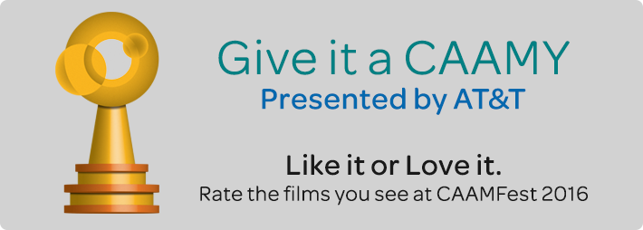
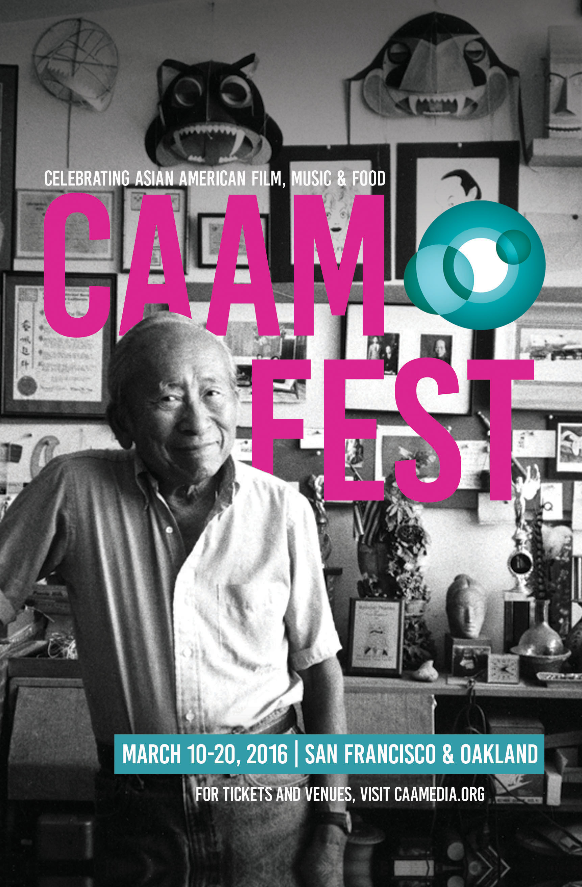

Watch it. Then review it by giving it a CAAMY rating
CAAMFest
CAAM presents CAAMFest (formerly the San Francisco International Asian American Film Festival) every March, the world’s largest showcase for new Asian American and Asian film, food and music programs, annually presenting over 100 works in San Francisco, Berkeley and Oakland. CAAMFest San Jose takes place in the fall and celebrates the vitality and creativity of Asian American cultures, communities and the spirit of San Jose and Silicon Valley through the power of film, music and food. Since 1982, our film festival has been an important launching point for Asian American independent filmmakers as well as a vital source for new Asian cinema
